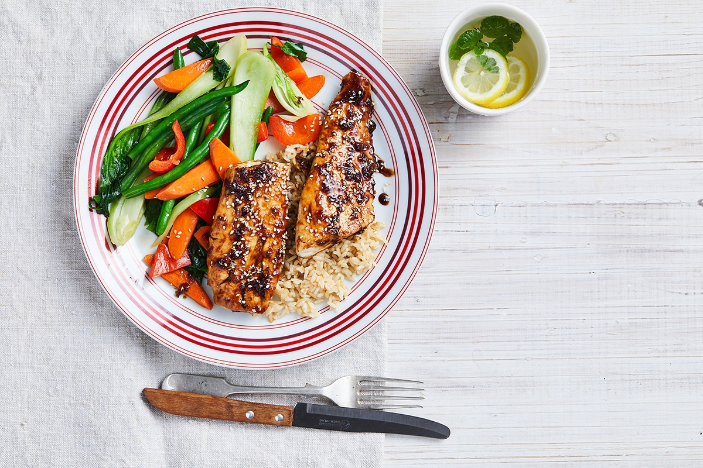

Mikah's Fav Dish

Description
A house fav but this is my youngest's absolute fav!!
Keep them coming back seconds with this mouth watering dish that is
full of a different tantilising flavour with every bite taken
be prepared for a bit of a mess, and I don't mean the dishes! lol
Ingredients
- Talapia
- Jasmine Rice
- Garlic
- Carrots
- Green Onions
- Bok Choy
- Red and Orange Peppers
- Green Beans
- Spinach
- Sesame Seeds
- Teryaki Sauce
- Soy Sauce
- Seasoning
- Lemon
Steps
- Turn on bbq on low and prepare the Talapia with garlic, butter and spice/seasonings
- In a small pot low-heat some butter, paprika, siracha sauce and put the spinach, bok choy, and peppers in
- Peel and chop the carrots, put on to boil
- Ina medium sized pot, put on some jasmine rice with a half of scoop of garlic butter
- Move the talapia from the tinfoil, place on the cooking mat and add teryaki sauce
- Drain carrots, add to other veggies and let simmer
- Dish up the rice, place fish on/bside rice and sprinkle some sesame seeds on the fish
- Add veggies and wait for a super quiet household!
- Pairs well with a nice fruity white wine and comes with huge smiles from all recipents!